In Section 4.2 we introduced the notion of a left fibration: a functor \(f\colon A \to B\) such that every morphism \(\beta\colon b \to b'\) admits a unique covariant lift starting in a given lift \(a\) of \(b\). The goal of this section is to introduce a variant of this notion, called a cocartesian fibration, in which the covariant lift is not necessarily unique but where there exists always an initial covariant lift with given source. Dually, we obtain a notion of cartesian fibration, in which there exists a terminal contravariant lift with given target.
Definition 4.5.1 ((Co)cartesian fibration). A functor \(f\colon A \to B\) is called a cocartesian fibration if the directed evaluation map \(\vec{\ev}^f_0\colon \Fun([1],A) \to A \vectimes{f} B\) admits a left adjoint section \(\lift^f_0\colon A \vectimes{f} B \to \Fun([1],A)\).
Dually, \(f\) is called a cartesian fibration if the map \(\vec{\ev}_1^f\colon \Fun([1],A) \to B \vectimes{f} A\) admits a right adjoint section \(\lift^f_1\colon B \vectimes{f} A \to \Fun([1],A)\).
Throughout this section, we will frequently state results only for cocartesian fibrations and leave their dual formulation for cartesian fibrations to the reader.
Example 4.5.2. The following are the first few basic examples of (co)cartesian fibrations:
• Every left fibration is a cocartesian fibration: the map \(\vec{\ev}^f_0\) is an equivalence and thus in particular admits a left adjoint section by Lemma 4.4.10. Dually, every right fibration is a cartesian fibration.
• In particular, every equivalence is both a cartesian fibration as well as a cocartesian fibration.
• For a category \(C\), the map \(p_C\colon C \to *\) is both a cartesian fibration and a cocartesian fibration. Indeed, since the map \(\vec{\ev}_0^{p_C}\colon \Fun([1],C) \to C \vectimes{p_C} *\) is isomorphic to \(\ev_0\colon \Fun([1],C) \to C\) by Remark 4.1.4, it admits a left adjoint section by Lemma 4.4.11, showing that \(p_C\) is a cocartesian fibration. The cartesian case is dual.
• For categories \(C\) and \(D\), the projection maps \(\pr_1\colon C \times D \to C\) and \(\pr_2\colon C \times D \to D\) are both a cartesian fibration and a cocartesian fibration. This can again be argued directly, but also follows from the previous example and Proposition 4.5.15 below.
4.5.1 Covariant transport
Cocartesian fibrations allow for a notion of covariant transport generalizing the situation for left fibration:
Notation 4.5.3 (Covariant transport). For a term \((a,\beta)\) of \(A \vectimes{f} B\), we denote the morphism \(\lift^f_0(a,\beta)\) in \(A\) as \[ \lift^f_0(a,\beta) \colon a \to \beta_!(a) \] and refer to its target \(\beta_!(a)\) as the covariant transport of \(a\) along \(\beta\). Observe that this map is a term of the category \(\Lift^f_0(a,\beta)\) of covariant lifts of \(\beta\) starting in \(a\), defined in Definition 4.2.7. In fact, \(\lift^f_0(a,\beta)\) is even an initial object of this category, see Lemma 4.4.21.
Just like in Construction 4.2.10, the assignment \(a \mapsto \beta_!(a)\) determines a functor \[ \beta_!\colon A_b \to A_{b'}. \] called covariant transport along \(\beta\).
Remark 4.5.4. When we write \(\lift_0^f(a,\beta)\)
we allow \(a\) and \(\beta\)
to be a term of \(A\) and a morphism of \(B\), respectively,
defined not just in a global or anima context,
but in an arbitrary context \(\Gamma\).
Concretely, this means that for every category \(\Gamma\)
and any solid commutative square of the form
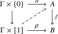
Note that by construction, cocartesian lifts are compatible with change of context. Explicitly, for every \(g\colon \Gamma'\to \Gamma\), reindexing identifies \(\lift_0^f(a, \beta)|_g\) with \(\lift_0^f(a|_g, \beta|_g)\), and analogously for cocartesian transport.
Finally, note that the definition of left adjoint section means precisely that for each term of \(A\vectimes{f} B\), i.e. each pair \((a,\beta)\) in arbitrary context \(\Gamma\) as above, the object \(\lift_0^f(a,\beta)\) is characterized as an initial object of the category \(\Lift^f_0(a,\beta)\) in context \(\Gamma\).
We would like to show that the covariant transport functors satisfy the relations \((\id_b)_! = \id\) and \((\beta' \circ \beta)_! = \beta'_! \circ \beta_!\) as in Proposition 4.2.12. While the statement for left fibrations was immediate due to uniqueness of covariant lifts, the statement for cocartesian fibrations is slightly more involved. We will need the following auxiliary notion of cocartesian morphisms:
Definition 4.5.5 (Cocartesian and cartesian morphisms). Let \(f\colon A\to B\) be a functor. A morphism \(\alpha\colon a\to a'\) in \(A\) is called \(f\)-cocartesian if for every object \(z\) of \(A\) the square
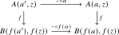 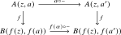
Construction 4.5.6. Let \(f\colon A\to B\) be a cocartesian fibration.
Since the functor \(\lift^f_0\) is a left adjoint section of \(\vec{\ev}^f_0\), it comes equipped with a natural transformation \(\epsilon\colon \lift^f_0 \circ \,\vec{\ev}^f_0 \to \id_{\Fun([1],A)}\). In particular, for a morphism \(\alpha\colon a \to a'\) in \(A\) with underlying morphism \(\beta := f(\alpha)\colon f(a) \to f(a')\) in \(B\), we obtain a morphism \(\epsilon_{\alpha}\colon \lift^f_0(a,\beta) \to \alpha\) in \(\Fun([1],A)\), corresponding to a commutative square in \(A\) of the form
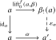 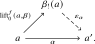
Lemma 4.5.7. Let \(f\colon A\to B\) be a cocartesian fibration.
Fix a term \(a\) of \(A\) and composable morphisms
\(\beta\colon b\coloneqq f(a) \xrightarrow{\beta} b'\xrightarrow{\beta'} b''\),
both in some context \(\Gamma\).
Then for every \(\gamma\colon a\to a''\) over \(\beta'\beta\)
there exists a dashed filling
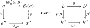
Proof
The adjunction \(\lift_0^f\dashv\vec{\ev}_0^f\) gives an equivalence \[ \Hom_{\Fun([1],A)}(\lift_0^f(a,\beta), \id_{a''}) \simeq \Hom_{A\vectimes{f} B}((a,\beta), \vec{\ev}_0^f(\id_{a''})) \] in the common context of the terms involved. On the left, a commutative square with target \(\id_{a''}\) is determined by its right-hand morphism, by Corollary 2.2.8. On the right, a morphism consists of \(\gamma\colon a\to a''\), a morphism \(b'\to f(a'')\), and the commutative triangle between their images in \(B\). Thus the displayed equivalence identifies with \[ A(\beta_!a,a'') \simeq A(a,a'')\times_{B(b,f(a''))}B(b',f(a'')), \] whose components are precomposition with \(\lift_0^f(a,\beta)\) and application of \(f\). This proves that the chosen lift is \(f\)-cocartesian. Its fiber over the prescribed pair \((\gamma,\beta')\) is the anima of dashed fillings, which is therefore contractible.
We will often use Corollary 2.2.8 to rewrite such lifting problems in the following form:
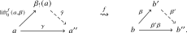
Lemma 4.5.8. Let \(f\colon A\to B\) be a cocartesian fibration. A morphism \(\alpha\colon a\to a'\) over \(\beta\) is \(f\)-cocartesian if and only if the morphism \(\epsilon_\alpha\colon\beta_!a\to a'\) from Construction 4.5.6 is an isomorphism.
Proof
By Lemma 4.5.7, the chosen lift \(a\to\beta_!a\) is \(f\)-cocartesian. Since \(\alpha\) factors through it by \(\epsilon_\alpha\), and \(f(\epsilon_\alpha)=\id_{f(a')}\), pasting pullback squares shows that \(\alpha\) is \(f\)-cocartesian if and only if \[ -\circ\epsilon_\alpha\colon A(a',z)\to A(\beta_!a,z) \] is an equivalence for every object \(z\) of \(A\). By Exercise 2.6.2, this is equivalent to \(\epsilon_\alpha\) being an isomorphism.
Remark 4.5.9. By abuse of notation, we used \(\epsilon_\alpha\) both for the morphism \(\lift_0^f(a,\beta)\to\alpha\) in \(\Fun([1],A)\) and for its image under \(\ev_1\). The preceding criterion concerns the latter morphism, from \(\beta_!a\) to \(a'\).
Proposition 4.5.10. Let \(f\colon A\to B\) be a cocartesian fibration.
(1) For each term \(a\) of \(A\), with \(b\coloneqq f(a)\), the cocartesian lift \(a \to (\id_{b})_!a\) of the identity can be chosen to be the identity map \(\id_a \colon a \to a\).
(2) Given a term \(a\) of \(A\) and composable morphisms \(b\coloneqq f(a)\xrightarrow{\beta} b'\xrightarrow{\beta'}b''\), the canonical map \(c\colon (\beta'\beta)_!(a)\to \beta'_!\beta_!(a)\) over \(b''\) obtained by filling
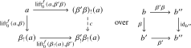
is an isomorphism.
Proof
(1) Recall that \((\beta_!a,\lift_0^f)\) is an initial object of the category \(\Lift^f_0(a,\beta)\). In the case where \(\beta=\id_{b}\) is the identity, this category is exactly the slice \((A_b)_{a/}\) which already has an initial object given by \((a,\id_{a})\). By Exercise 4.4.26, the canonical morphism between these initial objects is an isomorphism, proving the claim.
(2) We construct an explicit inverse \(c'\colon \beta'_!\beta_!(a)\to (\beta'\beta)_!(a)\) as follows. Consider the solid diagram
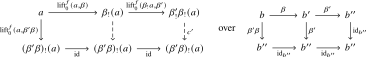
By applying Lemma 4.5.7 twice, we obtain the indicated dashed extensions, yielding the desired map \(c'\). The fact that this is an inverse follows by the uniqueness part of Lemma 4.5.7 applied to the diagrams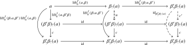
(twice, yielding \(\lift_0^f(\beta_!a,\beta') = cu\) and then \(\id = cc'\)) and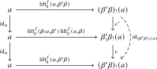
(yielding \(\id = c'c\)).
Corollary 4.5.11. Let \(f\colon A\to B\) be a cocartesian fibration. Covariant transport is functorial in the following sense:
(1) For every object \(b\) of \(B\), covariant transport \((\id_b)_!\colon A_b\to A_b\) along the identity is identified with the identity functor.
(2) Given composable morphisms \(b\xrightarrow{\beta}b'\xrightarrow{\beta'}b''\), there is a canonical identification \((\beta'\beta)_! = \beta'_!\beta_!\colon A_b\to A_{b''}\).
Proof
This follows directly from Proposition 4.5.10 applied to the tautological term \(a\colon A_b\to A\) of \(A\) in context \(A_b\) (which is just the fiber inclusion).
Lemma 4.5.12. Let \(f\colon A\to B \) be a cocartesian fibration.
(1) Every isomorphism of \(A\) is \(f\)-cocartesian.
(2) Let \(a\xrightarrow{\alpha}a'\xrightarrow{\alpha'}a''\) be composable arrows of \(A\) over \(b\xrightarrow{\beta}b'\xrightarrow{\beta'}b''\). Assume that \(\alpha\) is \(f\)-cocartesian. Then \(\alpha'\) is \(f\)-cocartesian if and only if \(\alpha'\alpha\) is \(f\)-cocartesian.
Proof
We use Lemma 4.5.8 to test cocartesian morphisms.
(1) Without loss of generality we may treat the case of an identity \(\id_a\colon a \to a\). In this case, we can choose \(\lift_0^f(a,\id_{f(a)})\) to be the identity, so that \(\epsilon_\alpha\) must be the identity too.
(2) Consider the following diagram
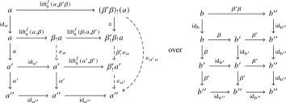
where the rightmost semicircle commutes by the uniqueness statement of Lemma 4.5.7. Since \(\alpha\) is cocartesian by assumption, \(\epsilon_\alpha\) is an isomorphism, hence also its cocartesian transport along \(\beta'\). We conclude that \(\epsilon_{\alpha'\alpha}\) is an isomorphism if and only if \(\epsilon_{\alpha'}\) is an isomorphism, which is what we wanted to show.
4.5.2 Closure properties of cartesian and cocartesian fibrations
We will now show that the classes of cartesian and cocartesian fibrations satisfy various closure properties.
Proposition 4.5.13. Let \(f\colon A \to B\) be a cocartesian fibration. Then for every category \(E\), the functor \(f_*\colon \Fun(E,A) \to \Fun(E,B)\) is a cocartesian fibration.
Proof
Since \(\Fun(E,-)\) preserves pullbacks, one observes that the directed evaluation map of \(f_*\) is given by applying \(\Fun(E,-)\) to \(\vec{\ev}^f_0\colon \Fun([1],A) \to A \vectimes{f} B\). The claim is now an immediate consequence from the fact that \(\Fun(E,-)\) preserves adjunctions, see Proposition 4.4.4.
Proposition 4.5.14. The classes of cartesian and cocartesian fibrations are stable under composition.
Proof
We will only prove the claim about cocartesian fibrations, leaving the dual claim for cartesian fibrations to the reader. If \(f\colon A \to B\) and \(g\colon B \to C\) are two cocartesian fibrations, we have by Lemma 4.1.7 a commutative diagram
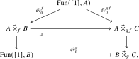
Proposition 4.5.15. The classes of cartesian and cocartesian fibrations are stable under base change.
Proof
Again we only treat the case of cocartesian fibrations, leaving the dual statement for cartesian fibrations to the reader. Consider a pullback square of the form
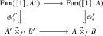 and assume that \(f\) is a cocartesian fibration. By Lemma 4.1.6, there is a pullback square of the form
and assume that \(f\) is a cocartesian fibration. By Lemma 4.1.6, there is a pullback square of the form
4.5.3 Relative cocartesian fibrations
Let \(S\) be a category. Using relative directed evaluation from Section 4.3.1 and the relative adjunctions of Section 4.4.3, we now define cartesian and cocartesian fibrations relative to \(S\).
Definition 4.5.16. A functor \(f\colon C\to D\) over \(S\) is a cocartesian fibration relative to \(S\) if \(\vec{\ev}^{f}_{0,S}\) admits a left adjoint section relative to \(S\). It is a cartesian fibration relative to \(S\) if \(\vec{\ev}^{f}_{1,S}\) admits a right adjoint section relative to \(S\). The corresponding notions of relative left and right fibrations were defined in Definition 4.3.10.
Lemma 4.5.17. Let \(f\colon C\to D\) be a functor over \(S\). Then \(f\) admits a left (resp. right) adjoint section relative to \(S\) if and only if its underlying functor admits a left (resp. right) adjoint section.
Proof
Forgetting the structure over \(S\) gives one implication. Conversely, let \(s\colon D\to C\) be a left adjoint section of \(f\). Write its section identification as \(fs=\id_D\), with counit \(\varepsilon\colon sf\to\id_C\). The normalized triangle identifications are \[ f\varepsilon=\id_f, \qquad \varepsilon s=\id_s. \] The identification \(fs=\id_D\) makes \(s\) a functor over \(D\), and hence over \(S\). The first triangle identification makes \(\varepsilon\) a transformation over \(D\), and postcomposition with \(q\colon D\to S\) makes it a transformation over \(S\). Thus the same counit exhibits \(s\) as a left adjoint relative to \(S\) by Definition 4.4.28. Its section identification is over \(S\) with the structure just specified. The right adjoint case is dual.
Lemma 4.5.18. For a functor \(f\colon C\to D\) over \(S\), there is a pullback square
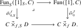
Proof
Consider the diagram
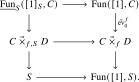
Proposition 4.5.19. If the underlying functor of a functor \(f\colon C\to D\) over \(S\) is a left (resp. right) fibration, then \(f\) is a left (resp. right) fibration relative to \(S\).
Proof
By Lemma 4.5.18, relative directed evaluation is a pullback of absolute directed evaluation. A pullback of an equivalence is an equivalence, with its inverse and identifications over the base. The right fibration case is dual.
Proposition 4.5.20. If the underlying functor of a functor \(f\colon C\to D\) over \(S\) is a cocartesian (resp. cartesian) fibration, then \(f\) is a cocartesian (resp. cartesian) fibration relative to \(S\).
Proof
The functor \(\vec{\ev}^{f}_{0,S}\) is a pullback of \(\vec{\ev}^{f}_0\) by Lemma 4.5.18. It therefore admits a left adjoint section by Proposition 4.4.15. By Lemma 4.5.17, this is a left adjoint section relative to \(S\). The cartesian case is dual.
Proposition 4.5.21. Let \(A\) be an anima and let \(f\colon C\to D\) be a functor over \(A\). Then \(f\) is a cocartesian (resp. cartesian) fibration relative to \(A\) if and only if its underlying functor is a cocartesian (resp. cartesian) fibration.
Proof
Since \(A\) is an anima, the identity-arrow functor \(A\to\Fun([1],A)\) is an equivalence. Its pullbacks \[ \ulFun_A([1]_A,C)\longrightarrow\Fun([1],C), \qquad C\vectimes{f,A}D\longrightarrow C\vectimes{f}D \] are therefore equivalences. The square in Lemma 4.5.18 identifies the two directed evaluation functors through these equivalences. One admits a left adjoint section if and only if the other does; apply Lemma 4.5.17 to obtain the relative assertion. The cartesian case is dual.
Corollary 4.5.22. For an anima \(A\), every functor \(p\colon C\to A\) is both a cartesian and a cocartesian fibration.
Proof
Regarding \(p\) as a functor over \(A\), its relative directed evaluation at the source is \[ \ev_0\colon\ulFun_A([1]_A,C)\longrightarrow C. \] The identity-arrow functor is a left adjoint section: the contraction of an arrow to its source used in Lemma 4.4.11 restricts to arrows over identities in \(A\). The contraction and its triangle identifications remain over \(A\). Dually, evaluation at the target has a right adjoint section. Thus \(p\) is both cartesian and cocartesian relative to \(A\), and the result follows from Proposition 4.5.21.